ThermaVoltFlow Simulator
Wat verandert er als je energie slimmer inzet?
Een interactief dashboard dat zonnepanelen, een thuisbatterij, het laden van je EV en een zonneboiler simuleert. Stel het weer, dag en nacht en je planning in en zie meteen wat dat doet met de energiestromen en je besparing. De Laravel-backend praat via gRPC met de Svelte-frontend.
Agentic gecodeerd met Codex.
- Svelte
- TypeScript
- Laravel
- PHP

gRPC- Inertia
- Vite
- SQLite
- Docker
- GitHub Actions